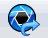

Workflow for animating with KeyShot
This workflow shows you how to use Solid Edge animation events in KeyShot.
-
Define the assembly features and configuration information such as motors and exploded views.
-
Choose Tools tab→Environs group→ ERA environment, and then select Animation Editor.
-
Add events to the timeline such as explosion durations or motor durations.
-
From Animation Editor, choose the KeyShot Animate command.
-
In the KeyShot Options dialog box , review the settings and adjust any parameters, and then click OK.
The KeyShot application starts.
-
At the bottom of the window, select the Animation command. A timeline with similar controls to the Solid Edge animation timeline appears.
-
In the timeline, make additional adjustments
Tip:KeyShot changes are not stored in the Solid Edge file.
-
Switch back to the Solid Edge application and make any changes that should be retained in the file.
-
Use the KeyShot Update command

to send any animation updates to the active KeyShot session.Note:Animation updates only occur if the Solid Edge Animation Editor is open.
-
In KeyShot, select the Render command then select the Animation option to define the parameters for generating the output file.
You can change settings for the following items:
-
Resolution
-
Time range
-
Video output
-
Frames Output
-
Render Mode
-
-
After you are satisfied with all the parameter settings, select the Render button.
Solid Edge supports KeyShot 5 or later. If you have an earlier version or do not have KeyShot installed, Solid Edge automatically installs it for you.
How do I
Render the current view with KeyShotLearn more
Rendering parts and assembliesKeyShot rendering
Look up more details
Render Area commandRender Scene command
KeyShot Options dialog box